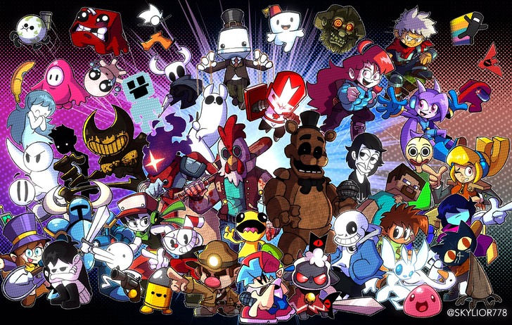

Watching retrospective Youtube ▶️ videos, video essays, or interesting videos.
Travel around the world (someday) Since I haven't traveled before for a very long time. ✈️
Sports I like are basketball 🏀 and bowling 🎳. I want to try archery 🏹, rock climbing🧗, and some snow sports someday❄️.
Listening to music 🎵. I listen to a wide variety of music from edm to pop to lofi.
Below is a more in depth look at some of my hobbies.
Anime
Some of my other favorite animes are:
Yugioh
Digimon
Demon Slayer
My Hero Academia
One Punch Man
This is a picture of some popular Shonen anime protagonists
This is a table showing which anime some protagonists came from.
Anime Name
Protagonists
Dragon Ball
Goku
Yugioh
Yugi/Atem
Demon Slayer
Tanjiro
Bleach
Ichigo
Hunter x Hunter
Gon
Gaming
My favorite video game genres are platformers, metroidvanias, action rpg, strategy, puzzle, card games, exploration, and party games.
I usually play indie games and some triple a games. Here are some of my favorites.
Indie Games:
Hollow Knight
Terraria
Celeste
Ori
Shovel Knight
Triple A Games:
Elden Ring
All 2d and 3d Mario Platformer Games
Donkey Kong Country series
Mario Kart
Mario Party
I love indie games because they have lots of care, content, replayability, and amazing soundtracks at a cheap price.
You can get multiple indie games for the price of a triple a game.
Indie games also have lots of free updates as well.

Listen to some Lofi or DKC music!
Lofi helps me focus so I listen to it when studying and working.
The DKC series also has some great music by the legendary composer David Wise! Give it a listen!
Both are great listens for focusing, relaxing, and sleeping.